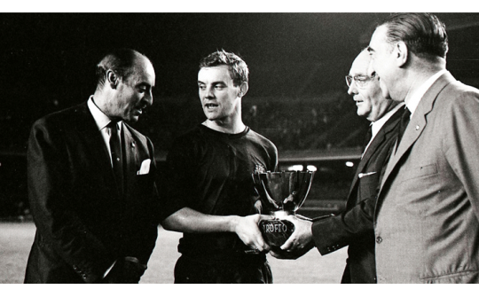
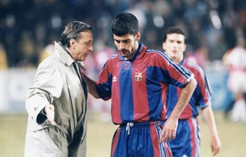
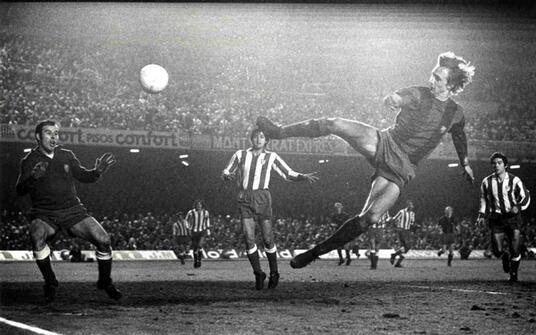
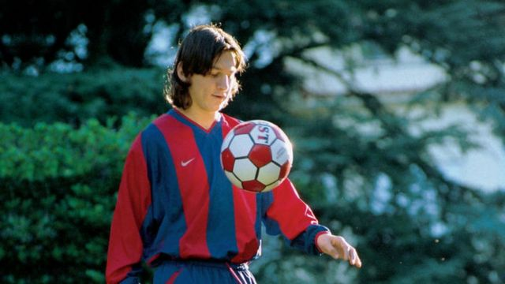
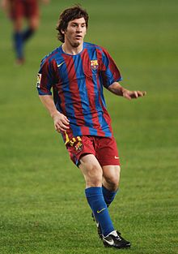
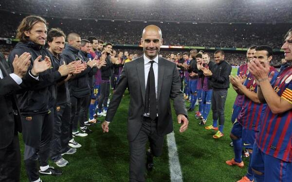
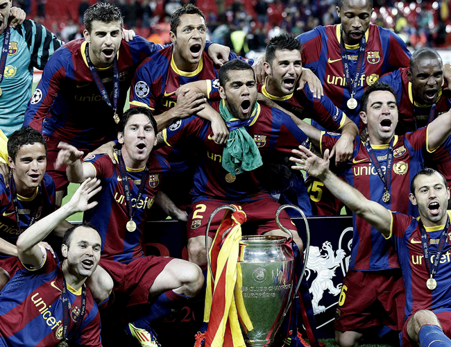

Origen FC Barcelona
Para entender la importancia del estatuto del FC Barcelona es importante entender su historia:
En 1899, Joan Gamper, un hombre suizo, decidió introducir el fútbol en Barcelona mediante la creación de un equipo. El club fue fundado oficialmente el veintinueve de noviembre de 1899.
Creció y cobró fuerza, ganando títulos como la Copa Macaya en 1902, la Copa de los Pirineos en 1910 - 1912.
El FC Barcelona construyó su primer estadio en 1909 con una capacidad de 6.000 personas.
Durante la década de 1920 la fama y el éxito del equipo creció. Ganaron la primera Liga del Campeonato en la temporada 1928 - 1929. Con la nueva popularidad del club fue necesario construir un nuevo estadio. En 1922 se construyó el estadio 'Les Corts', con una capacidad de 22.000 personas.
Es importante recordar que el FC Barcelona ha sobrevivido a una Guerra Civil. En 1936, las tropas de Franco fusilaron al presidente del club, Josep Sunyol, debido a su pertenencia a un partido de izquierda.
Todos los aficionados del FC Barcelona se enorgullecen de lo que se llama la Temporada de 'Cinco Copas'. Éste fue el período entre 1951 - 1952 cuando el FC Barcelona ganó la Copa, la Liga, la Copa Latina, la Martini Rosso y la Eva Duarte.
En 1957 se construyó el Camp Nou, con una capacidad inicial de 90.000 personas.
FC Barcelona de Johan Cruyff
Su inmensa calidad se vio recompensada internacionalmente con tres Balones de Oro al mejor jugador europeo (1971, 1973 y 1974). El Flaco, firmó contrato con el FC Barcelona en agosto de 1973 tras unas duras negociaciones entre el club catalán y el Ajax y también, gracias al decisivo trabajo del gerente barcelonista Armand Carabén.
En su primera temporada en el Barça, el delantero holandés demostró con creces su enorme categoría futbolística. Su juego inteligente, técnica soberbia y capacidad de líder, permitieron al FC Barcelona conquistar la Liga 1973/74 con una superioridad abrumadora, tras 14 años sin hacerlo.
En la retina de los buenos aficionados barcelonistas han quedado grabadas para siempre las imágenes del prodigioso gol que le marcó al Atlético de Madrid en un partido en el Camp Nou y que le valió el apodo del holandés volador. También, se recuerda el famoso 0-5 conseguido en el Santiago Bernabéu en febrero de 1974. Desgraciadamente, en las temporadas posteriores el Barça sólo pudo conseguir la Copa del Rey 1977/78. Cruyff, dejó de ser jugador del FC Barcelona en 1978.
En 1988 volvió como entrenador y empezó la mejor etapa vivida en el Barça en su historia, ya que encadenó cuatro títulos de Liga y, entre otras competiciones, conquistó la primera Copa de Europa, en mayo de 1992 en Wembley. Era la época del legendario Dream Team, un equipo que maravilló a todos con un fútbol extraordinario. En 1996 abandonó el cargo.
Recibió dos homenajes en el Camp Nou, el primero en dejar el Club como futbolista, el 27 de mayo de 1978, y el segundo, con el Dream Team que él había dirigido, el 10 de marzo de 1999.
En enero de 1999 fue elegido como mejor jugador del siglo en Europa, y en septiembre de 2006 la Generalitat de Cataluña le concedió la Creu de San Jordi.
 La Aparición de Messi
Dos ojeadores de Buenos Aires, enterados de su paso por River, se pusieron en contacto con su socio en Barcelona, Horacio Gaggioli, quien a su vez se comunicó con el agente Josep María Minguella. Minguella decidió llamar a Carles Rexach para pedirle que probaran al jugador.
El 17 de septiembre de 2000, procedente de Buenos Aires con escala en Madrid, Messi llegó con su padre a El Prat, el aeropuerto de Barcelona, donde los esperaba Gaggioli para llevarlos al hotel, justo delante del Camp Nou. Joaquín Rifé, entrenador de juveniles, lo citó para un entrenamiento con niños de su categoría, entre los que estaban Cesc Fábregas y Gerard Piqué. En uno de esos entrenamientos, que se prolongaron dos semanas,18 marcó seis goles y, según Joan Lacueva, ejecutivo responsable del fútbol base del club, "a la media parte tuvieron que cambiarle de equipo para equilibrar el amistoso". Sin embargo, el club seguía sin contratarlo, porque esperaban el regreso de Rexach, que había ido a los Juegos Olímpicos de Sídney. Finalmente, se organizó una prueba el 2 de octubre en el campo 3, a la vuelta de Rexach, que vio jugar a Messi y resolvió la situación: «Llegué con el partido empezado y no me dio tiempo a sentarme. Tenía claro que, si no le fichábamos, nos arrepentiríamos», recordó años después.
Comenzó la pretemporada 2004-2005 jugando amistosos con el primer equipo: ante el Banyoles, el Figueres, el Palamós, el Hércules y el Olympique de Marsella, donde fue titular por primera vez. Contra el Palamós el 20 de julio en el Camp Nou, en el minuto '74, anotó su primer gol, que puso el 0-4 parcial de un partido que el Barcelona ganó 0-6. Participó también en el On Tour Asia, una gira promocional del club por Corea, China y Japón en la que se jugaron cuatro amistosos. Convirtió un gol el 1 de agosto en el 5-0 ante el Kashima Antlers.
Aunque sabía que podía funcionar como atacante en cualquier posición, Rikjaard lo hizo jugar como extremo derecho, puesto que tenía Giuly.46 Messi jugó su primer partido oficial el 16 de octubre, el derby barcelonés contra el Espanyol en el estadio Olímpico Lluís Companys, cuando sustituyó a Deco ocho minutos antes de terminar el encuentro. Con diecisiete años, tres meses y veintidós días, se convirtió en uno de los canteranos más jóvenes en debutar en La Liga.47 El 27 de octubre, ante el Gramenet, jugó por primera vez en la Copa del Rey y el 7 de diciembre en la Liga de Campeones 2004-2005 frente al FC Shakhtar Donetsk en el Donbass Arena. Hacia fines de ese año, el diario El País lo señalaba como "la gran promesa".
En un partido de La Liga contra el Albacete Balompié el 1 de mayo de 2005, tras asistencia de Ronaldinho, Messi anotó, de vaselina, su primer gol oficial, después de que le anularan otro parecido por estar en offside. Con diecisiete años, 10 meses y 7 días, se convirtió en el jugador más joven del Barcelona en hacer un gol en ese torneo, marca que superó Bojan Krkić en 2007. Luego de cinco temporadas sin conseguir el título, el 14 de mayo el Barcelona empató 1-1 contra el Levante y fue campeón de La Liga tres jornadas antes de la finalización del torneo.
La Era Guardiola
Después de una temporada en la cual el Barça no ganó ningún título, el Club decidió prescindir de Frank Rijkaard y apostar por Guardiola, que, hasta aquel momento, solo había entrenado el filial azulgrana. Dónde había subido al equipo a Segunda División B.
El Barça de Guardiola arrancaría la temporada, después de cambios importantes en la plantilla y logrando la clasificación para la fase de grupos de la Champions League en una previa delante el Wisla de Cracovia (4-1 el global). Pero no tendría tanta buena suerte en el inicio de la competición doméstica, donde caería en el campo del Numancia en la primera jornada de Liga (1-0) y empataría ante el Racing de Santander en la segunda (1-1).
Después del mal inicio, todo empezó a mejorar, los azulgranas empezaron a sacar buenos resultados, sobre todo gracias al buen fútbol que jugaban. Los de Guardiola se plantaron en el último mes de competición con los tres títulos aún en juego.
La Copa del Rey fue el primer título que consiguió el Barça aquella temporada. Después de eliminar al Mallorca en las semifinales, con el mítico penalti que Pinto paró a Martí, el Barça llegaba a la final ante la Athletic Club de Bilbao en Mestalla. Donde se impuso por 4-1, con los goles de Yaya Touré, Messi, Bojan Krkic y Xavi, que remontaban el gol inicial de Toquero.
El segundo título llegó unos días después, la Liga. Que había quedado medio decidida después del 2-6 en el Clásico ante el Real Madrid. Aquel día los de Guardiola mostraron su mejor fútbol en un partido que ha pasado a la historia. Y finalmente, la Liga se obtuvo cuando el Real Madrid cayó en el campo del Villarreal, con que el Barça fue campeón matemáticamente y consiguió su 19a Liga.
Y el tercer título de aquella primera temporada fue la Champions League. Después de las semifinales ante el Chelsea, con el gol agónico de Iniesta en Stamford Bridge. El Barça se impuso al Manchester United (que era el campeón de la edición pasada), con los goles de Eto'o y Leo Messi (2-0). De este modo, levantaron la tercera Champions de la historia del Club en Roma.
La tercera temporada de Guardiola al frente del Barça tenía un objetivo claro: volver a ganar la Champions. Y empezaría ganando un título, la Supercopa de España ante el Sevilla. En el Sánchez-Pizjuán los azulgranas caerían por 3-1 con un equipo sin los internacionales españoles, que venían de ganar el Mundial 2010 en Sudáfrica. Pero en la vuelta, ya con todos los jugadores disponibles, los culés se llevaron la Supercopa con un 4-0 en el Spotify Camp Nou con un hat-trick de Messi.
Y después de un gran inicio de temporada llegaría el primer gran reto, el Clásico ante el Real Madrid de Mourinho. El Madrid había fichado al entrenador que había eliminado al Barça en la última temporada de la máxima competición europea, cosa que hacía que aquel primer Clásico pudiera ser muy importante para la temporada. Y tanto que lo fue, el Barça ganó por 5-0, un resultado que igual que el 2-6 del 2009 se sumaría a las victorias históricas del Barça al Real Madrid. Aquella Liga acabaría siendo azulgrana después de ganar en el campo del Levante y certificar la tercera Liga consecutiva.
Pero el gran triunfo de aquella temporada fue la Champions, la segunda de la época Guardiola y la cuarta de la historia del Club. Después de eliminar al Real Madrid en las semifinales (3-1 global), el Barça llegaba a Wembley para enfrentarse al Manchester United dos años después. Aquel día el Barça de Guardiola haría seguramente uno de los mejores partidos que se han visto nunca, y se impuso por 3-1 gracias a los goles de Pedro, Messi y Villa. Abidal levantaría la Champions al cielo de Londres después de que el capitán Puyol le cediera el privilegio.
